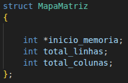
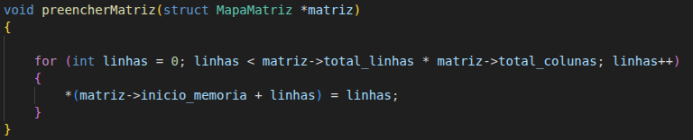
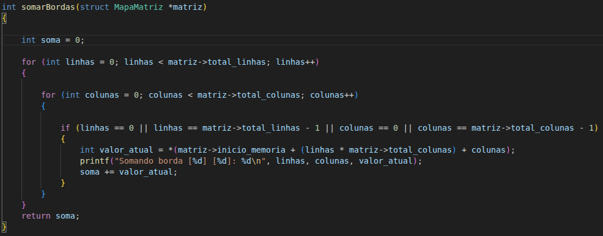
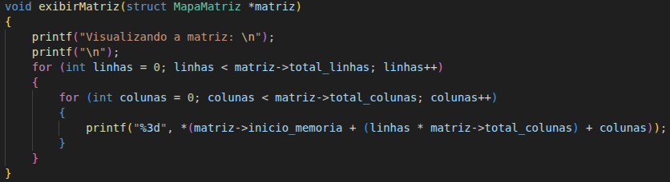
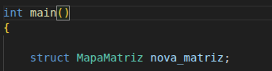
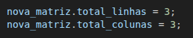
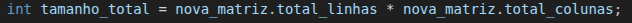
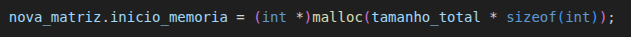
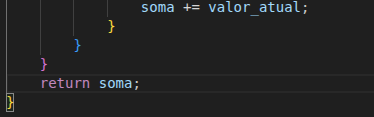

Criação da STRUCT, que será nossa base neste exercício:

struct MapaMatriz
{
int *inicio_memoria;
int total_linhas;
int total_colunas;
};
Agora construimos uma função VOID preencherMatriz()(onde não há retorno de elementos)

Para o preenchimento automatico da struct *matriz, com numeros inteiros crescentes de 0 a 8, sendo a matriz 3x3 = 9 elementos.
Dentro desta função recebemos os argumentos (struct MapaMatriz *matriz)
O que isso significa?
A função espera receber um argumento do tipo struct nomeado com MapaMatriz, e damos o nome desse argumento de *matriz, sempre adicionando o *(ponteiro)
Assim voce diz para o sistema que agora essa struct é um ponteiro.
No fim, estamos dizendo que, cada LINHA vai receber o valor da variavel INT LINHAS, que é um iterador dentro do laço FOR.
Calculo para Soma de Bordas
Agora para os Calculos, precisamos percorrer toda a *matriz, por isso utilizamos 2 laços FOR.
No primeiro laço FOR, podemos observar que estamos usando:
(int linhas = 0; linhas < matriz->total_linhas, linhas++);
Quando dizemos que (linhas < matriz->total_linhas; linhas++), esse valor total_linhas, vem de dentro da struct MapaMatriz, que colocamos como argumento.
Após o primeiro laço FOR, que foi usado para percorrer as LINHAS da matriz, agora precisamos criar um outro laço de repetição, para percorrer as COLUNAS e neste exmeplo foi usado como (colunas = 0; colunas < matriz->total_colunas; colunas++)
Perceba que neste segundo laço FOR utilizamos a variavel total_colunas para percorrer toda a coluna.
Agora utilizamos a condicional IF.
if(linhas == 0 || linhas == matriz->total_linhas - 1 || colunas == 0 || colunas == matriz->total_colunas - 1);
Simbolo == referente a igualdade
Simbolo || referente a OU
Passando para a linguagem "humana" esse IF representa o seguinte:
SE(LINHAS for igual a 0 OU linhas for igual a TOTAL_LINHAS - 1 OU colunas == 0 OU total_colunas - 1)
Colocamos o -1 por que se a matriz tem 3 linhas, os indices são 0, 1, 2. Portanto, o limite é 3-1 = 2 (numero de indices).
Agora vamos para a parte importante, o cálculo da soma das bordas da matriz!
Para fazer a soma dos valores, primeiros precisamos criar uma variavel do tipo INT, que chamaremos de:

int soma = 0;
Note que também já inicializamos a variavel com o valor de 0
Como já fizemos 2 laços de repetição FOR(LINHAS, COLUNAS) para percorrer as linhas e colunas da matriz, precisamos agora criar uma outra variável para receber o valor do cálculo, neste exemplo iremos criar a variavel:
int soma_valor;
Agora dentro da condicional IF temos:
int valor_atual = *(matriz->inicio_memoria + (linhas * matriz->total_colunas) + colunas);
Vamos entender por partes:
Criamos a variavel valor_atual para receber o valor do cálculo que sera apresentado :
int valor_atual
*(matriz->inicio_memoria)
Aqui estamos dizendo para o sistema: Entre no ponteiro *(matriz->inicio_memoria), e nos traga o endereço de memoria, onde se inicia a Fita de memória com os endereços salvos.
Então diremos que o endereço de memória inicial será 0x100(apenas para entendimento do exemplo)
((linhas * matriz->total_colunas) + colunas)
Aqui estamos dizendo que o valor de LINHAS será multiplicado pelo total_colunas. Mas por que isso?
Imagine que a memória é uma fila única de cadeiras (uma fita). Se cada linha da sua matriz tem 3 cadeiras, para chegar na segunda linha, você precisa 'pular' as 3 cadeiras da primeira linha.
Por Isso fazemos: linhas * total_colunas;
E por que esse +COLUNAS no final?
Após o cálculo anterior ter te levado até a 'porta' da linha correta, o + COLUNAS diz quantos passos você deve dar para a direita dentro dessa linha para encontrar o elemento exato.
É como um endereço de GPS:
- (linhas * total_colunas) te leva até o ANDAR correto(linha)
- + COLUNAS te leva até o número do apartamento coluna
printf("Somando a borda [%d] [%d]: [%d], linhas, colunas, valor_atual)
Simbolo %d refere a impressão de numeros inteiros(INT).
Após o fechamento da string(" "), colocamos o nome das variáveis que substituirão os simbolos %d, que neste exemplo serão, o valor do iterador LINHAS e do iterador COLUNAS, e o valor da variavel valor_atual que criamos anteriormente
E para finalizar essa sessão, temos o codigo:
soma += valor_atual
soma = soma + valor_atual
Que também pode ser lido como:
soma = soma + valor_atual
Entao entendemos que a variavel soma foi inicializada com o valor 0
Se a variavel valor_atual estiver valendo 2 entao o calculo ficaria:
0 = 0 + 2
soma = soma + valor_atual
A partir deste momento a variavel soma passa a ter o valor de 2
Seguindo para o proximo loop, digamos que o valor de valor_atual agora é 3
2 = 2 + 3
soma = soma + 3
A partir disso, soma agora vale 5.
Agora precisamos usar o comando:
return soma;
Dizendo ao sistema para retornar o valor INT guardado dentro da variavel SOMA.(Que neste exemplo teria o valor de 5)
Função para Exibir a Matriz
Agora criamos uma outra função, chamada exibirMatriz();

void exibirMatriz(struct MapaMatriz *matriz);
Toda função começando com VOID, significa que não haverá retorno de elementos da função, diferente da função somarBordas, onde esperamos um retorno de um INT.
Nesta função também utilizaremos 2 loops FOR, com iteradores LINHAS e COLUNAS, em seguida usamos o comando PRINTF para mostrar na tela os valores guardados na matriz.
printf("%3d", *(matriz->inicio_memoria + (linha * matriz->total_colunas) + coluna));
"%3d significa que todos os numeros impressos, mesmo com 1 ou 2 digitos, terão o espaço de 3 caracteres entre eles, deixando a tabela alinhada e facilitando a visualização.
O coração do Sistema: int main()
Aqui começaços criando uma nova variável do tipo STRUCT MapaMatriz com o nome de nova_matriz

struct MapaMatriz nova_matriz;
Agora vamos dizer para o sistema, qual o tamanho da nossa matriz:
nova_matriz.total_linhas = 3;nova_matriz.total_colunas = 3;

Em seguida precisamos criar uma variavel auxiliar para guardar o tamanho da matriz:

int tamanho_total = nova_matriz.total_linhas * nova_matriz.total_colunas;
Alocação Dinâmica com malloc()
O próximo passo é alocar um espaço de memória.
Segue o código:

nova_matriz.inicio_memoria = (int *)malloc(tamanho_total * sizeof(int));
O que este código signfica?
A struct nova_matriz.inicio_memoria estará recebendo um ponteiro de um numero inteiro(int *), o malloc(Memory Allocation) é a função que reserva o espaço de memória onde os dados da nossa matriz serão guardados.
E o último calculo:
(tamanho_total * sizeof(int))
Funciona da seguinte forma: Vimos que o 'tamanho_total' é 9. A função sizeof(int) verifica o tamanho de um inteiro no sistema(que geralmente é de 4 bytes), então o calculo pode se traduzir para ->
(tamanho_total * sizeof(int)) == (9*4)
Com esse cálculo recebemos o retorno de 36, o sistema entende que ele tem que separar 36 bytes de memória para a struct

Para finalizar o sistema sem erros, precisamos liberar o espaço da memoria alocada, entao usamos a função:
free();
E como usaremos esta função, precisamos passar um argumento para ela, de qual alocação ela irá liberar a memória:
free(nova_matriz.inicio_memoria);
O sistema entende que, a partir do inicio_memoria ele pode liberar todo o espaço, evitando o erro MEMORY LEAK(vazamento de memória)
Após liberar a memória, finalizamoso sistema com o codigo:
]system("pause")
return 0;
Temos que por o return 0;, pois a MAIN, é uma função INT, então temos que retornar um inteiro.
Avalie esta Aula
Sua opinião é fundamental para melhorar este conteúdo didático!